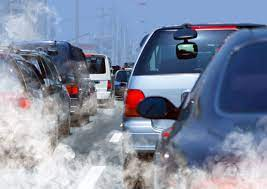

Now I know you probably love driving places or taking cars somewhere as much as the next but did you know that you are actually hurting the earth the more you drive. The gas emissions are going into the air which is polluting what we are breathing. So that in itself should be another incentive to cut down on the amount of gas you are using because who wants to breathe in air that is bringing pollutants into our body. These pollutants can make us more prone to breathing complications such as asthma. We understand that cutting down may seem impossible or just far fetched in general but with a little effort it’ll be like second nature. For example walking to places that are 15 minutes away instead of driving would reduce car usage significantly. Grab a friend, make it a fun walk, this will also help you be more present with nature and the people around you. Who knows, maybe these walks will become a weekly thing for you and your friends. Also try to swap driving with public transportation once a week, if you replace driving once a week itll be make such a big difference for the Earth and for your pockets, have you seen gas prices lately? Yeah we wouldn't want to pay that either. So save your money and the Earth at the same time, doesn’t that sound like a good idea?
